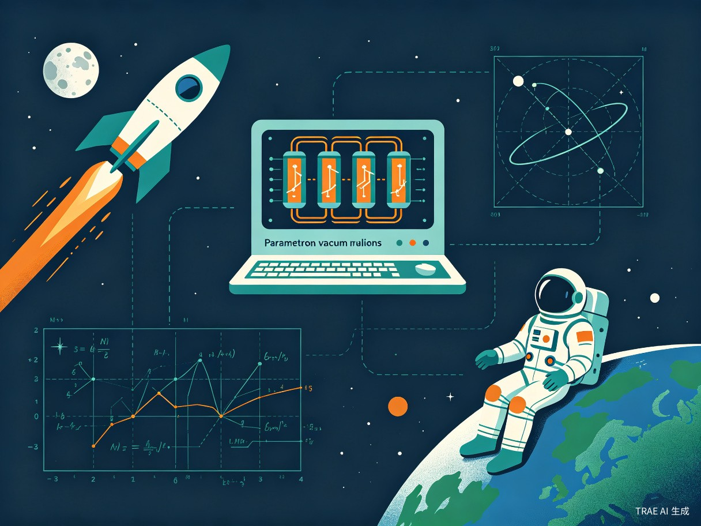

第八章：石至太空篇 — 从石头到宇宙

这是《石纪元》的最终篇章，也是千空科技树的巅峰。千空团队将目标投向了太空——追寻石化之源到月球。
最终篇章
石至太空篇是千空科学复兴之路的终极目标。从石器到火箭，千空用科学连接了原始与未来。这一篇章揭示了石化之谜的最终真相——Why-Man和月球上的石化生物。
计算机开发（Parametron）Parametron Computer
剧中描述
千空开发了真空管计算机，使用参数器（Parametron）作为逻辑元件。这台计算机用于轨道计算和科学数据处理，是千空航天计划的核心工具。参数器是一种利用谐振电路的参数激励现象实现逻辑运算的元件，比传统真空管更稳定可靠。
科学原理
参数器（Parametron）由日本科学家后藤英一（Goto Eiichi）发明，利用参数激励振荡原理。通过改变谐振电路中电容器或电感器的参数（如电容值），可以控制振荡的相位（0°或180°），从而实现二进制逻辑运算。参数器的优势是功耗低、稳定性好。
现实对照
参数器由后藤英一（Goto Eiichi）于1954年发明。后藤利用参数器逻辑元件成功建造了多台计算机，包括MUSASINO-1（1957年）和PC-1（1958年）。参数器计算机在1950-1960年代的日本计算机发展中扮演了重要角色。[43]
准确性评估
参数器计算机的原理和设计在作品中是准确的。千空选择参数器而非传统真空管逻辑，体现了他对计算机科学的深入理解。但在原始条件下制造精密的电子元件和组装整台计算机，难度极高。
原理正确，制造难度极高轨道计算与数学语言Orbital Mechanics & Mathematical Language
剧中描述
千空利用计算机进行轨道力学计算，确定了前往月球的发射窗口和飞行轨道。他需要计算地球和月球的相对位置、引力场、速度增量（delta-v）等参数，制定精确的飞行计划。
科学原理
轨道力学基于牛顿万有引力定律和开普勒行星运动定律。航天器在地球和月球之间的飞行轨道可以用圆锥曲线（椭圆、抛物线、双曲线）描述。关键计算包括霍曼转移轨道（Hohmann Transfer Orbit）、逃逸速度和引力辅助（gravity assist）等。
现实对照
轨道力学的理论基础由牛顿在17世纪建立，开普勒在17世纪初提出了行星运动三定律。现代航天轨道设计由齐奥尔科夫斯基（Tsiolkovsky）、戈达德（Goddard）和奥伯特（Oberth）在20世纪初奠定基础。[44]
准确性评估
轨道力学的计算原理正确。千空使用计算机进行轨道计算是合理的，但精确的轨道设计需要大量的天文观测数据和反复修正。
高度准确火箭引擎与推进系统Rocket Engine & Propulsion System
剧中描述
千空团队设计和制造了火箭引擎，这是整个太空计划的核心技术。火箭引擎使用液体推进剂（液氧和燃料），通过燃烧产生高温高压气体，经喷管加速排出产生推力。千空的火箭设计参考了现代火箭的基本架构。
科学原理
火箭引擎基于牛顿第三定律（作用力与反作用力）。推进剂在燃烧室中燃烧产生高温高压气体，经收敛-扩张喷管（de Laval nozzle）加速到超音速排出，产生推力。推力公式：F = ṁ × Ve + (Pe - Pa) × Ae，其中ṁ为质量流率，Ve为排气速度，Pe为喷管出口压力，Pa为环境压力，Ae为喷管出口面积。
现实对照
现代液体火箭引擎的发展始于20世纪初。罗伯特·戈达德（Robert Goddard）于1926年成功发射了世界上第一枚液体燃料火箭。联盟号火箭（Soyuz）的RD-107/108引擎是1960年代开发的可靠火箭引擎，至今仍在使用。太空竞赛期间（1957-1975），美苏两国在火箭技术上取得了巨大突破。[45]
准确性评估
火箭引擎的基本原理正确。但制造一台可靠的液体火箭引擎需要精密的涡轮泵、燃烧室冷却系统、高压管路和控制系统，在原始条件下的难度几乎不可能。
原理正确，制造难度极高宇航员训练Astronaut Training
剧中描述
千空为月球任务选拔和训练了宇航员。训练内容包括离心机训练（模拟高G力）、失重模拟、紧急逃生演练、航天器操作训练等。千空利用石化装置的特性来模拟失重环境，展现了创造性的训练方法。
科学原理
宇航员训练的核心是适应太空环境。太空中的主要挑战包括：微重力（失重）、高G力（发射和返回时）、辐射暴露、心理压力和密闭空间适应。离心机训练用于提高G力耐受力，人体通常能承受约5-9G的短暂暴露。
现实对照
现代宇航员训练体系由NASA在1960年代建立，包括体能训练、技术训练、科学训练和心理训练。水下训练（Neutral Buoyancy Laboratory）用于模拟太空行走。[46]
准确性评估
宇航员训练的基本内容在作品中合理。千空利用石化装置模拟失重是创意性的设定。
基本合理月球着陆Moon Landing
剧中描述
千空团队的火箭成功发射并飞向月球。在月球轨道上，登月舱与主火箭分离，千空和队友乘坐登月舱降落在月球表面。这是人类（在石之世界中）首次踏足月球，也是千空科学复兴之路的最高成就。
科学原理
月球着陆涉及轨道力学、推进控制和着陆技术。登月过程包括：地月转移轨道注入、月球轨道捕获、登月舱分离、动力下降和最终着陆。月球没有大气层，无法使用降落伞，必须完全依靠火箭引擎减速着陆。
现实对照
人类首次登月是阿波罗11号（Apollo 11）任务，1969年7月20日，美国宇航员尼尔·阿姆斯特朗（Neil Armstrong）成为第一个踏上月球的人类。阿波罗计划共成功登月6次（阿波罗11、12、14、15、16、17），共12名宇航员踏足月球。[47]
准确性评估
月球着陆的基本流程和原理在作品中正确。但千空团队在原始条件下实现登月，整体可行性极低。
原理正确，整体可行性极低Why-Man真相The Truth About Why-Man
剧中描述
千空在月球上发现了石化的终极真相：Why-Man并非人类，而是一种生活在月球上的石化生物（petrification organism）。这些生物以石化波为"语言"进行交流，石化事件是它们无意中释放石化波的结果。千空最终与Why-Man建立了沟通，理解了石化的真正原因。
科学原理
作品将Why-Man设定为一种未知月球生物，能够发射特定频率的电磁波（石化波）。这种设定融合了天体生物学（astrobiology）和生物电磁学的概念。虽然现实中月球不存在任何已知生命形式，但作品通过"石化微生物"的设定给出了一个自洽的科学解释。
现实对照
现实中月球不存在任何生命迹象。多次月球探测任务（包括阿波罗计划、嫦娥计划等）均未发现月球上有生命存在或曾经存在生命的证据。月球缺乏大气层、液态水和有机物质，不具备已知生命存在的条件。[48]
准确性评估
Why-Man和月球石化生物完全是虚构设定，是作品的核心科幻元素。虽然作者试图给出科学化的解释，但整体上属于科幻创意。
虚构设定钻石电池Diamond Battery
剧中描述
在故事的尾声，千空提到了钻石电池的概念——利用放射性同位素和钻石半导体制造的核电池，可以提供数千年的持续电力。这一发明代表了千空科技树的终极目标：为人类文明提供永续的能源。
科学原理
钻石电池的概念基于贝塔伏特效应（betavoltaic effect）。使用放射性同位素（如碳-14或镍-63）发射的贝塔粒子（电子），在半导体材料中产生电流。钻石（碳的同素异形体）作为半导体，可以利用碳-14的衰变产生微弱但持久的电流。
现实对照
钻石电池的概念由布里斯托大学（University of Bristol）的研究团队于2016年首次提出。他们利用核反应堆废料中的碳-14制造钻石电池原型，理论上可以持续发电数千年。目前该技术仍处于实验室研究阶段，尚未商业化。[49]
准确性评估
钻石电池的概念在科学上是前沿但真实的研究方向。千空在故事的尾声提到这一概念，暗示了科学探索永无止境的主题。
概念真实，技术尚在研究中